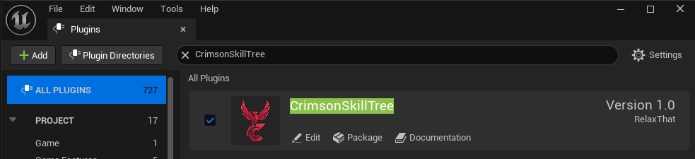

This guide covers the initial setup of the plugin and the fundamental concepts you'll need to understand before you start building your skill trees.
Quick Start Video Tutorial
Plugin Installation
There are two ways to install the plugin into your project. Using the Epic Games Launcher is the recommended method.
Method 1: From the Epic Games Launcher (Recommended)
Acquire the Plugin: Purchase or download the plugin from the Unreal Engine Marketplace.
Install to Engine: Open the Epic Games Launcher. Navigate to your Library and find the plugin in your "Vault". Click the "Install to Engine" button and select the version you want to add it to.
Installing to Project: If you didn't build the engine from source and want to change the source code for the plugin, it is recommended to move it to your projects Plugin folder. The quickstart video goes over how to do this.
If you just want to override or create your own classes, no change is necessary.
Enable the Plugin: Open your Unreal Engine project. In the editor, go to Edit > Plugins. Search for "Crimson Skill Tree", make sure the "Enabled" box is checked, and restart the editor if prompted.

Method 2: Manual Installation (From a .zip file)
Use this method if you have the plugin as a standalone folder (e.g., from GitHub or a direct download).
Locate Your Project: Find your Unreal Engine project folder in your computer's file explorer.
Create a Plugins Folder: If it doesn't already exist, create a new folder named Plugins inside your main project folder.
Copy the Plugin: Copy the entire CrimsonSkillTree plugin folder into this new Plugins folder.
Launch the Editor: Open your Unreal Engine project. The editor may ask if you want to build the new plugin module. Click "Yes".
Verify Installation: In the editor, go to Edit > Plugins. Search for "Crimson Skill Tree", make sure the "Enabled" box is checked, and restart the editor if prompted.
Core Concepts
It's helpful to understand the main pieces of the system:
Skill Tree Asset: This is the blueprint of your skill tree. It's a data asset where you'll design the layout of your nodes and their connections.
Skill Tree Manager: This is the "brain". It's a component you add to your character (or Player State) or ANY Actor that manages all their skill trees, keeps track of which nodes are unlocked, and handles spending points.
Nodes: These are the individual skills or perks in your tree. Each node has a level, costs, conditions to unlock, and events that happen when you level it up.
Conditions: These are the rules for unlocking a node. For example, "Requires parent node to be level 1" or "Requires 5 total skill points to be spent".
Events: These are the actions that happen when a node is activated or its level changes. Examples include granting an ability, applying a passive stat boost, or modifying a character property.
Widgets: These are the visual elements (UI) that the player interacts with. The system is designed to be highly customizable, so you'll create your own widgets that inherit from the plugin's base classes.